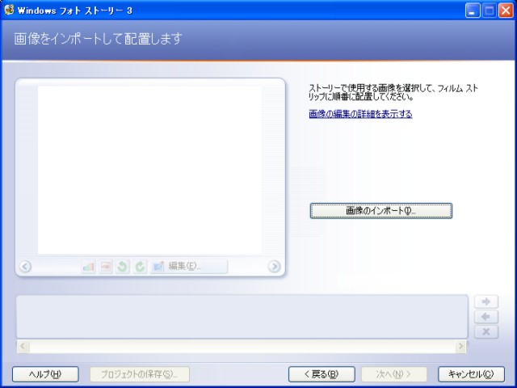
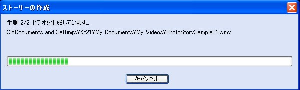
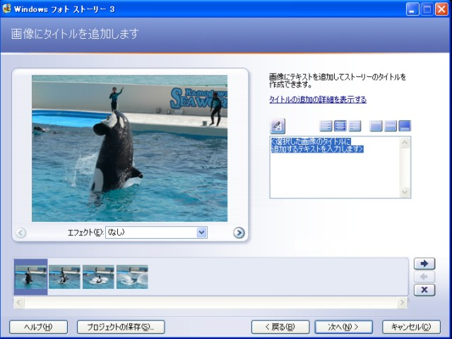
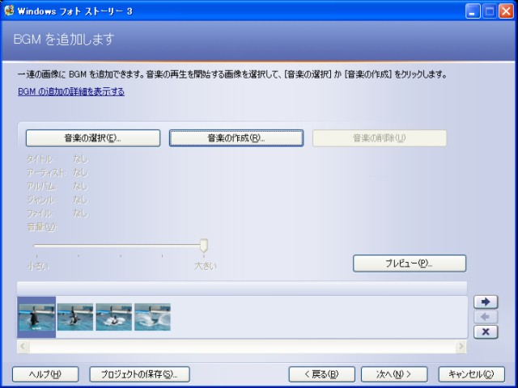

a chuckling scene
= special episodes =
about Photo Story 3
The illustrations on this page used Photo Story 3 of a Japanese version.
I'm going to report about Microsoft Photo Story 3 (PS3).
This software converts a large number of still pictures into animation,
and outputs the Windows Media Video (WMV) file.
The processing such as the panning and the zooming is given to each still picture.
initial page

automatic mode
To make the photo story by the simplest composition,
you only import the photos to it.
It will start making the story when you click the [Next] button several times.

To click the [Next] button several times, PS3 starts making story automatically.

The effect such as the switch of photos and the zooming is automatically processed.
And, the Windows media Video(WMV) file is output.
When you play the file on the media player, you might be surprised.
The process of animation is very natural.
When here is clicked, you can see the sample output by operation above-mentioned.
The PS3 seems to analyze the image in the process of animation to some extent.
For instance, when a person is arranged at the center of the photo, the zoom is done toward the person.
In addition, the relation of the photos (before/next) seems to be considered.
manual mode
I listed in the process order about the adjustment which can be performed manually.
[1] Adding a title to your pictures

When the character is input to a title addition column,
a result is reflected in the image displayed.

[2] Narrate your pictures and customize motion

[3] Adding background music

[4] Saving your story

I think the main process is the following two points.
customize motion
adding background music
** customize motion page **
The [Preview] button starts to be indicated from customize motion,
and the result of the adjustment can be confirmed quickly.

The panning, the zooming and the processing time in the customize motion can be adjusted manually.

It was mentioned above that this process by automation is also fine make.
However, when the similar photos continue, the same processing might be repeated.
In this case, the desired result can be roughly obtained by confirming it on the preview screen while adjusting it manually.
Moreover, the switch of photos can be specified on the customize motion page manually.
The default transition is the fadeout. When the story changes greatly,
the image can be changed by specifying it manually.

** adding background music **
The adding background music can use existing data such as mp3 and wav.
Or, the tune matched to the content of the image by using the function for creation of the music
attached to PS3 can be made.

I don't use this function much.
However, I think it is a rather powerful tool.
By the way, the preview after background music is added
considerably depends on
the power of machine you use. =note=
** Saving story **
Since saving method of the finished story is also important, I explain it simply.
In saving the story, the various resolutions profiles are prepared
according to the environment finally used.
The output resolution is 640x480 pixel in default.
If the machine spec is high, even 1024x768 pixel can be specified.
menu window of the profile

The story is able to enjoy with general TV if it converts into DVD-Video and it burns on DVD disk.
PS3 outputs WMV (Windows Media Video) file.
However, because conversion from WMV to DVD-Video is not supported in PS3,
some software for conversion is needed.
I'm using the software attached to a DVD player.
The [Save Project] button is displayed under the left on the page
in each process without initial page.
By clicking this button，all the work done by that time can be preserved.
When the file name is specified and preserved it, the output file has the "wp3" extention.
The "wp3" file has larger size rather than "wmv" file,
because it includes all imported data from photos to music.
Each data keeps original size.
afterwards the work can be continued with another machine.
I have some strange problem about PS3
Lastly, I report the doubt about saving the work onto DVD.
There is a mode of [Profile for creating DVDs-NTSC (640x480) ] in the profile
for saving PS3.
A wonderful story is able to be enjoyed on the TV screen
if saving the work in this mode and converting it into DVD-Video... I thought so.
This was failure in my environment.
When the output WMV file is played on the media player directly,
it is out of focus fairly.
I thought that the WMV file is in focus on TV if converting it into DVD-Video
and saving onto DVD disk. However, it was out of focus after all.
Oppositely, converting the WMV file output by the default profile [Profile for computers-2 (640x480) ] into DVD-Video
becomes a far clearer image.
There might be a problem in my operating method about this phenomenon.
However, this phenomenon is a mystery for me.
supplementation
The number of photos that can be treated by PS3 is up to 300.
When making the story with over a hundred high resolution photos such as 2560x1920pixel,
some problems occur because of the performance of the machine.
The machine A has a Pentium4 2.8G (CPU) and 1G (memory) .
The machine B has a Pentium4 1.9G (CPU) and 768M (memory) .
By both of the machine-A and the machine-B, the preview page works well
at the time of the end of customize motion.
When the preview is started after addition of the background music,
behavior of machine-B becomes unstable though the machine-A is just no problem.
First a preview screen doesn't start any more easily.
Even if it starts, sound isn't synchronous with photos.
Even if I try to make a preview end, it doesn't end (^^;.
The number of photos that PS3 is treatable is changed by the spec of the machine you use.
I think that trial and error is necessary to this.